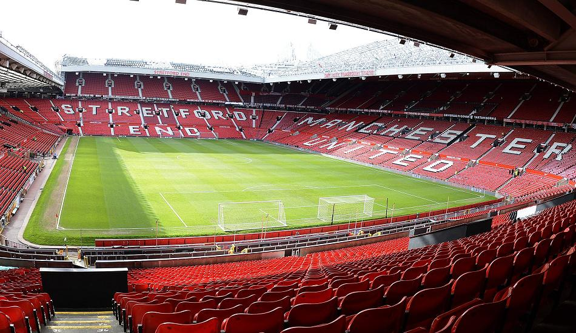

Old Trafford

Old Trafford is a football stadium in Old Trafford, Greater Manchester, England, and the home of Manchester United. With a capacity of 75,635, it is the third-largest stadium and the second-largest football stadium in the United Kingdom, and the eleventh-largest in Europe. It is about 0.5 miles (800 m) from Old Trafford Cricket Ground and the adjacent tram station.
Old Trafford, nicknamed "The Theatre of Dreams" by Bobby Charlton, has been United's home ground since 1910, although from 1941 to 1949, the club shared Maine Road with local rivals Manchester City as a result of Second World War bomb damage. Old Trafford underwent several expansions in the 1990s and 2000s, including the addition of extra tiers to the North, West and East Stands, which served to return the ground almost to its original capacity of 80,000. Future expansion is likely to involve the addition of a second tier to the South Stand, which would raise the capacity to over 90,000. The stadium's record attendance was recorded in 1939, when 76,962 spectators watched the FA Cup semi-final between Wolverhampton Wanderers and Grimsby Town.
Old Trafford has hosted FA Cup semi-finals, England fixtures, matches at the 1966 World Cup and Euro 96 and the 2003 Champions League Final, as well as rugby league's annual Super League Grand Final and the final of two Rugby League World Cups. It also hosted football matches at the 2012 Summer Olympics, including women's international football for the first time in its history.